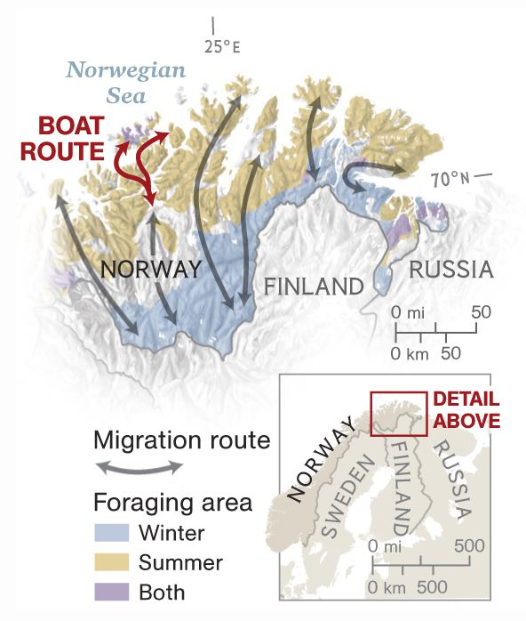

<ion-header>
  <ion-navbar>
    <ion-buttons>
      <button ion-button menuToggle>
        <ion-icon name="menu"></ion-icon>
      </button>
    </ion-buttons>
    <ion-title>
      Ionic Blank
    </ion-title>
  </ion-navbar>
</ion-header>

<ion-content padding>
  <!-- 
  <ion-icon name="heart" [isActive]="false" (click)="onFav" ></ion-icon>
  <ion-icon name="chatbubbles" isActive="false"></ion-icon>
  <p> {{ likesCount }} likes</p>
  <p> {{ locDescription }} </p>
  <p> {{ commentsLength }} comments</p>
  <button ion-button [navPush]="commentsPage" >Click to comment</button> -->

  <div *ngFor="let item of myPlaces" >

    <ion-item>
      <ion-avatar item-start>
        
      </ion-avatar>
      <h2>Marty McFly</h2>
    </ion-item>

    

    <ion-card-content>
      <p> {{ item.locDescription }} </p>
    </ion-card-content>

    <ion-row>
      <ion-col>
        <button ion-button icon-left clear small (click)="onFav($event.target)">
          <ion-icon name="heart" [isActive]="false" ></ion-icon>
          <div> {{ item.likesCount }} likes</div>
        </button>
      </ion-col>
      <ion-col>
        <button ion-button icon-left clear small (click)="onComment()">
          <ion-icon name="chatbubbles" [isActive]="false"></ion-icon>
          <div> {{ item.commentsLength }} comments</div>
        </button>
      </ion-col>
      <ion-col center text-center>
        <ion-note>
          11h ago
        </ion-note>
      </ion-col>
    </ion-row>
  
  </div>

</ion-content>
